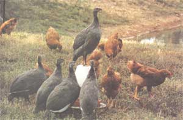
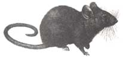
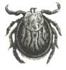
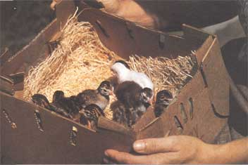
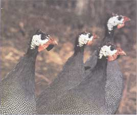

Gardening With Guinea Fowl
August/September 1992
GARDEN & YARD
BY GAIL DAMEROW
The Ultimate Low-Cost, Chemical-Free Pest Control
Like officious little men in baggy gray suits, the guinea fowl scuttle up and down our driveway. Since dawn, they've been scouring our orchard for beetles, locusts, spiders, and ticks. Now they are ready to patrol our yard and garden for ants, cockroaches, flies, wasps, termites, cutworms, grubs, and snails. The guinea fowl are relentless in their pursuit...
I can remember a time when my husband and I had no guineas. Our former flock had roosted in trees and nested on the ground where, one by one, they had fallen prey to owls and foxes. While we were guinea-less, our potato crop was denuded by potato beetles, our hibiscus hedge was decimated by locusts, and we lost several fruit trees to flat-head borers. We soon realized that our "little gray men" had given us far more than just a pleasant diversion (and occasional good eating). So we got a new crew to work our land, and I hope never to live without these little guys again.
Helmeted Little Soldiers
Many people have never seen, much less heard of, guinea fowl. Visitors, on spying their first guinea, invariably ask "What is that - a turkey?" Nope, but not a bad guess. Like turkeys, guineas are Galliformes , a group encompassing all chicken-like birds. But while chickens are members of the pheasant family, turkeys and guineas each have a family of their own. Native to Africa, they are known for traveling in large, gregarious flocks. Guinea fowl were introduced into Europe by 15th century Portuguese explorers, and then arrived in North America with the early settlers. There are seven species of guinea fowl, of which the "helmeted pearl" is by far the most common, and certainly the weirdest looking, with its oddly shaped helmet, white, featherless face, bright red wattles, and gray polka-dotted feathers.
Ask those who keep guineas why they have them and you'll get a different answer every time. Chicken and turkey farmers keep them to ward off poultry-eating predators. Ranchers turn them loose to discourage rattlers and copperheads. Country dwellers like the way they gobble down disease-carrying ticks. Orchardists use them to drive off marauding birds. Farmers put them to work patrolling for row crop pests. Guineas do all this without damaging crops. Sure, they'll take the occasional peck at a cultivated plant, but they much prefer insects, weeds, and seeds.
Free-ranging guineas spend most of their days foraging. They work as a team, marching chest to chest and devouring anything they startle as they move through the grass. When they discover a special treat - a rodent, for example, or a small snake - they close ranks, circle their prey, and move in for the feast. All the while, they keep up a steady stream of whistles, chirps, and clicks, a sort of running commentary on the day's hunt.
But these little foragers have their faults. Like chickens, guineas are natural-born scratchers - I once watched a week-old guinea scratch vigorously in a saucer of starter mash while others stood by trying to catch bits of mash sailing through the air. Nevertheless, a guinea doesn't scratch as enthusiastically or as persistently as a chicken, and is far less likely to dig up garden seedlings. Although they are attracted to freshly worked soil and will spend hours digging holes for luxurious dustbaths. Once I acquired a whole flock of guineas simply by arriving on the scene moments after they had devastated a friend's blossoming snap beans.
In addition to the minor inconveniences caused by dusting and occasional scratching, guineas have other characteristics that some people find somewhat less than endearing. For one thing, the hens lay only seasonally, and the young are quite delicate. Guineas are also a noisy bunch, making them a poor choice where high-strung neighbors live nearby. Because of their continuous conversations, guineas cannot be snuck into housing developments as chickens often are. It's probably best because guineas don't take kindly to confinement; they much prefer the freedom to prowl their home base. In this respect, a guinea has the same independence as a barn-born cat - it'll eat your food and tolerate your presence, but a guinea will never be your best friend.
Hardly Any Trouble At All
Maybe you can't pal around with these guys, but they're a heck of a lot less trouble than other fowl. Because guineas prefer freedom to regimentation, they have not been commercially exploited and "improved" as have chickens and turkeys. The happy result is that, while these other fowl have become less resistant to disease, free-ranging guineas remain almost entirely disease-free. Also, guinea fowl adapt readily to all but the severest climates (although they strongly dislike snow).
In most areas, a shelter is not essential against the weather, however (as I learned the hard way) a rudimentary shelter is a good way to provide night-time protection from predators such as dogs, coyotes, foxes, and owls. The shelter need only be a simple three-sided, south-facing shed with a wire front and a draft-free perch toward the back, offering seven inches of roosting space per bird. A flock fed late in the day under the roof will be encouraged to stay the night. If you prefer to pen your guineas, instead of letting them come and go as they please, you should allow for at least 30 square feet per dozen birds. Cover the pen with wire netting, or pinion your guineas to keep them from flying out. (Pinioning involves clipping off the last joint of one wing, at the thumb, when birds are less than one week old.) Never pinion free-ranging guineas or they won't be able to fly away from predators.
Feeding is perhaps the easiest part of caring for your fowl. A range-fed flock fulfills most of its own dietary needs, requiring little more from you than fresh water and a handful of mixed grains to entice them indoors at night. When forage is scarce during fall and winter, up the grain ration a bit. Feed penned guineas commercially prepared lay ration designed for chickens, except during breeding season. One dozen guineas will eat approximately two pounds per day. To improve laying, switch to higher-protein turkey or gamebird ration (if available) in February.
Egg Laying and Casual Mating
A domestic guinea hen lays seasonally, just as her wild cousins do. Some time between March and May, when she is 26 to 28 weeks old, an average hen will lay about 100 eggs. She will continue laying that number each year until she is five-years-old (or even older). Her eggs will be light-brown, sometimes speckled, with shells that are three times tougher than the shells of chicken eggs. Guinea eggs have a sharper point than chicken eggs have, and they're smaller (three guinea eggs roughly equals two chicken eggs).
Hens lay in late morning or early afternoon and prefer to steal a nest in some secluded spot rather than lay in any fine nest you provide. If you confine your hens until they've finished laying for the day, you won't have to hunt for their eggs. But even when confined, most hens shun nests and deposit their eggs on the floor. Egg fertility is rarely a serious problem. If you keep one cock for every four or five hens, you can expect nearly 100 percent fertility (as long as the cocks are three years old or less).
Often I am asked if a guinea will mate with a chicken. Yes, casual mating does occur, but it's infrequent, and the rare cross-bred offspring (which are sometimes described as looking like vultures) are usually sterile. An interesting side note: Guineas that are raised among chickens are tamer than guineas that are not, and they are easier to entice indoors at night.
Love and Other Fowl Relationships
One of the most surprising things about guinea fowl is the strong attachment that develops between a guinea cock and his hens. If separated during feeding, a hen and cock will run toward each other to reunite like long lost lovers. It's quite a sight. And while a hen is on the nest, her mate will stand guard, creating an enormous ruckus if he senses oncoming danger. I'll never forget the day when one of my hens was carried off by a fox - her mate spent several days looking and calling for her.
Although hens are protective of their babies, their frenzied pace can make them seem like neglectful mothers. Guinea eggs take between 26 to 28 days to hatch, and mothers are tenacious setters at this time. Once the first few eggs have hatched however, the hens pretty much are off and running. When they take off, they travel too far and too fast for the little fellows to keep up. Many times the mothers will lead their little offspring right through dewy grass, causing them to chill. This should explain why most guinea keepers use an incubator or a broody chicken for hatching.
Poorman's Pheasant
Guinea is often called "poorman's pheasant" because it tastes similar to pheasant, at considerably less cost. And even though it sells for about half the price of pheasant, guinea is still considered a luxury food. You can find it on the menus of upscale French and Oriental restaurants, especially on the East Coast.
Guinea meat is darker and richer tasting than chicken, and it contains less fat and fewer calories. Guineas are also smaller-boned than chickens, but have heavier breasts, making them meatier than they look. The average bird dresses out to 75 percent of its live weight - five percent more than the 70 percent average for a broiler chicken.
Beecause a mature hen weighs three pounds and a mature cock weighs four pounds, you can expect a maximum table-ready weight of two and 1/4 to three pounds. Like the meat of chickens and other birds, the meat of a mature guinea cock is not nearly as tasty as the meat of a hen. Because a bird's breastbone gets stiffer as the bird matures, you can tell a guinea is still prime for eating by the flexibility of its breastbone.
Young guinea is the most tender and flavorful of all. The best meat comes from 12-week-old keets weighing about two pounds. The giant guinea, a hybrid developed for the meat market, reaches twice that weight in the same amount of time. Butcher and dress a guinea as you would a chicken. Chill the meat quickly and store it (loosely covered) in the coldest part of the refrigerator for up to two days. If you then wish to freeze the bird to cook later, pack it tightly in plastic wrap and seal it in a plastic bag designed for freezer storage. The meat will keep for six months in the freezer, and up to one week in the freezer compartment of the refrigerator.
Succulent young guinea may be broiled, roasted, or fried. Because the meat of an older hen is lean and dry, the traditional way to roast a hen is to wrap it in a blanket of bacon and roast it uncovered at 350° F for about 45 minutes until the meat is tender. To brown the skin, remove the bacon toward the end of the cooking period. If you prefer to do it without the added fat, cook a mature hen by a moist-heat method such as braising or stewing. You might, for example, quarter the hen and marinate it overnight in 1/2 cup apple cider or white wine combined with 1 cup hot water, 1 small onion, and 3 crushed cloves. Drain the meat, pat it dry, and brown it in a little butter or oil. Add one sliced onion and 1/2 cup apple cider or dry white wine. Cover and simmer for 30 minutes to one hour (depending on the bird's age) until the meaty part of a leg gives when you prick it with a fork. No matter how you prepare it, guinea goes well with sauteed mushrooms, brown or wild rice, and lightly steamed spinach or a fresh tossed salad.
Caring for Your Keets
A baby guinea is called a "keet" (from the old Nordic word "cytling" or "keetling," meaning a young animal). Some people choose to order day-old keets by mail. If you do so, be sure to open the carton in front of the mail carrier, just in case you have to file a claim. Chances are, though, you'll find a healthy gang of eager little birds with beady, black eyes and bright coral beaks and feet. If you plan to free-range your guineas, it's a good idea to start out with keets rather than full-grown birds. The baby guineas become acquainted with their home ground as they broaden their foraging range, while adult guineas are likely to fly the coop the first chance they get.
Baby guineas are a study in
perpetual motion as they scurry
about, pecking at the tip of each
other's beaks and rat-a-tatting the
walls.
Keets of the dark variety look an awful lot like two-legged chipmunks with two-tone brown stripes down their backs. The little critters are a study in perpetual motion as they scurry about, pecking at the tip of each other's beaks, nipping on each other's toes, rat-a-tatting the walls, and flapping their stubby little wings for the sheer joy of movement. Then suddenly, as if on command, they all will collapse into instant sleep.
Because they are so small and delicate, keets can be easily trampled or drowned during their critical first two weeks of life. To avoid losing any, keep the keets uncrowded. When they reach three weeks of age, move them into larger facilities offering at least one square foot of space per bird. By the time keets are one-month-old, they develop their first set of feathers. In the pearl variety, these feathers will be camouflage-brown. Later, gray feathers will appear, letting you know your keets are ready to fend for themselves on the open range.
Raise no more than two dozen keets when you're first starting out. They are tiny and quick to escape through wire mesh as fine as one-half inch, making tight facilities a must. The ideal small-scale brooder is a stout cardboard box lined for the first few days with paper towels, and later with dried wood shavings, to keep the keets clean, warm, and dry. Heat the brooder with an ordinary light bulb, screwed into a reflector. Raise or lower the light to adjust the degree of warmth, letting the birds' comfort be your guide. If they are unhappy, you'll know - their persistent, shrill cries will make you think you've been invaded by a horde of angry crickets. You'll also know when keets are content by their musical "me-too, me-too" call.
As for feeding your keets, try a 21 to 23 percent protein ration consisting of either commercial turkey starter or mashed hard-boiled eggs mixed with cottage cheese and a little cornmeal (or oatmeal). After four weeks, switch to 18 percent grower ration, or a mixture of cracked corn and whole wheat supplemented with young grass clippings, chopped lettuce, and other fresh greens. And of course, always provide water.
Deciphering Sexes and Sounds
It isn't easy to tell which keets are cocks and which are hens until they are about eight-weeks-old. Then one day, the hens will start sounding their characteristic two-syllable cry, "comeback, comeback," which some folks often hear as "good-luck, good-luck:" Guinea cocks, on the other hand, call with a series of one-syllable sounds, "chi-chi-chi-chichi," followed by a harsh "chrrrr." They sound so much like the buzz of a chainsaw that, one winter, a neighbor's lonely hen took to chattering at my husband whenever he cut firewood. A hen, when upset or angry, may call like a cock, but a cock will never call like a hen.
At maturity, cocks and hens have identical plumage. Cocks, however, are slightly larger. The red wattles dangling beneath their chins are slightly bigger and cup away more from their necks. Cocks also have larger helmets that stand up straighter than the hens: Still, helmet size and other sexual differences are quite subtle. My first "pair" of guineas was purchased from a supposedly experienced breeder who was selling one of two mated pairs, and who was later red-faced as she asked to exchange one of my hens for one of her cocks. That first pair, when we finally sorted them out, brought me nothing but good luck, good luck, good luck. Now, I can't imagine life without guinea fowl. They are an invaluable source of chemical-free pest control and a source of endless entertainment.
Editor's note: Mother Earth News contributor Gail Damerow and her guineas live on a small farm in Tennessee.
Resources:
Stock
Ralph Winter (21357 White Pine Lane, New Vienna, Iowa 52065, (319/853-4195) carries a variety of colors in addition to white and pearl. Prices range from $1.75 to $3.50 per keet, depending on color and quantity
Country Chickeries (Box 217, Madill, Oklahoma 73446, (405/795-2515) also carries a variety of colors. Prices range from $2 to $3, depending on color and quantity.
Morris Farms (18370 SW 232 Street, Goulds, Florida 33170, (305/247-1070) specializes in French hybrid guineas. Prices range downward from $1.50, depending on quantity.
Books
The following books are available from Stromberg's Chicks & Gamebirds Unlimited, Box 400, Pine River, Minnesota 56472, 218-587-2222:
Guinea Fowl, by Roy Van Hoesen & Loyl Stromberg ($4.95), is a collection of chatty essays extolling the guinea's virtues.
Guinea Fowl of the World, by R.H. Hastings Belshaw ($54.95) is a comprehensive manual for the serious breeder. A great resource.
|
 An odd but formidable hunter:A collection of guineas and chicken. |
 Just a few of the nefarious pests guineas prey upon. |
 A brooder full of young guineas:the ideal small-scale brooder is a stout cardboard box lined for the first few days with paper towels. Dried wood shavings can be substituted afterwards. |
|
 |
 |
 |